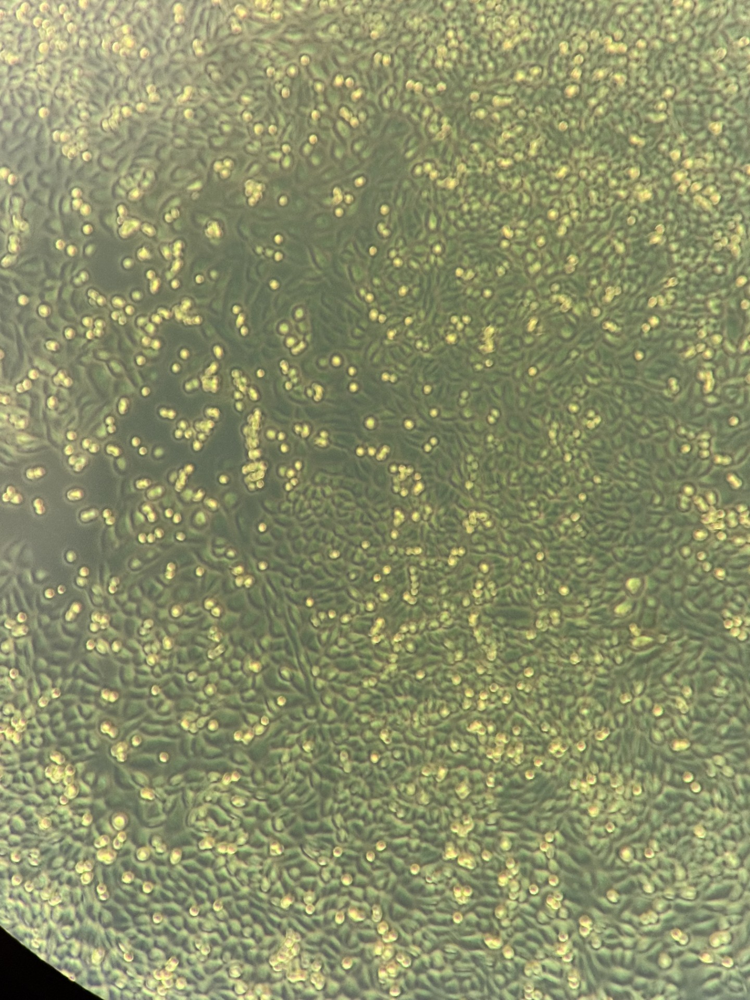
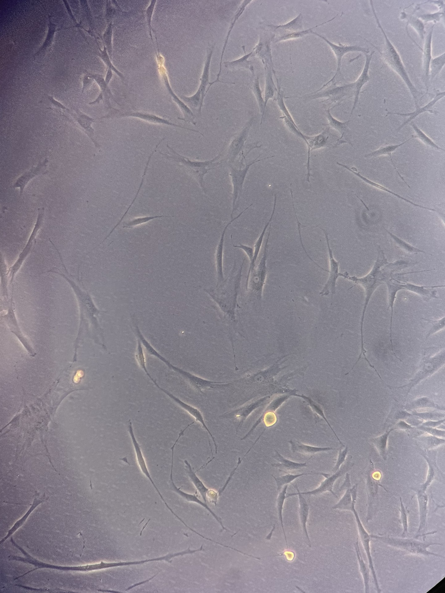
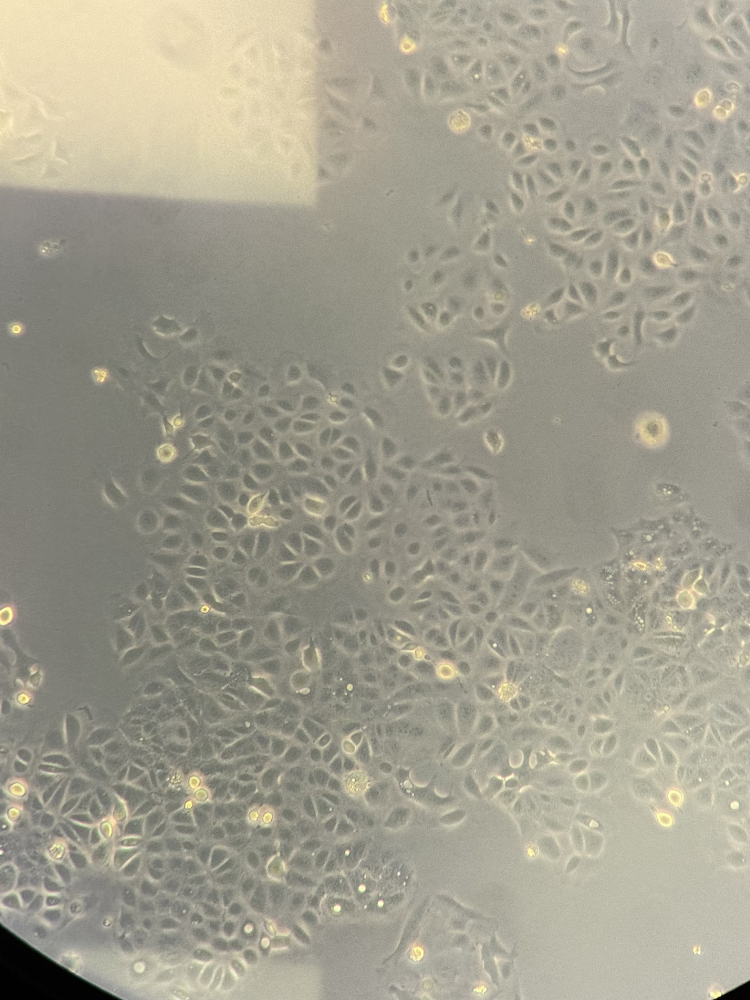
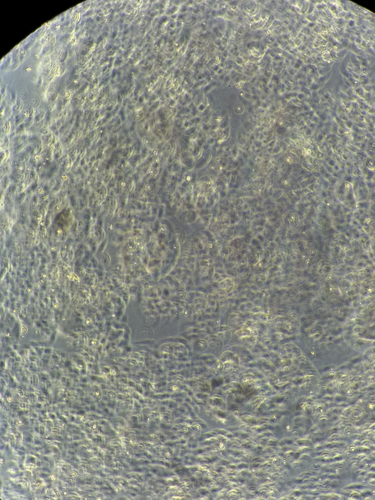
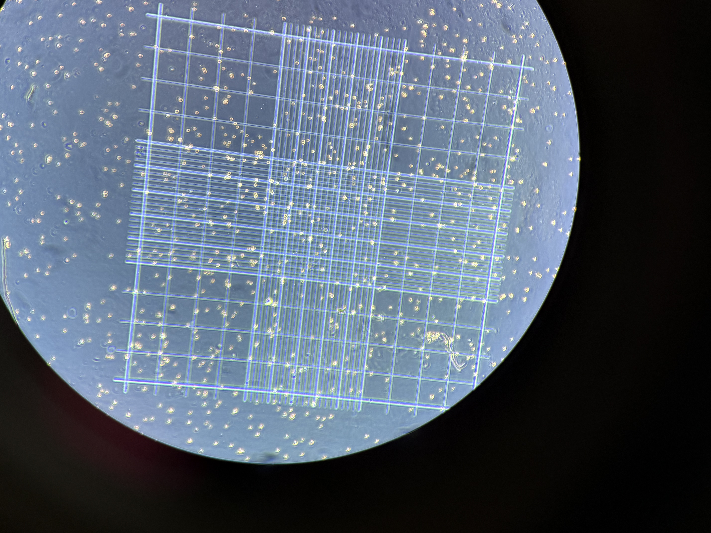

01
Cell Observatory
Microscopic observations from my ATA module — real images from the lab, each telling a different part of the story.
Day 1
Experiment 1 — Cell Line Characterisation
Visual characterisation of three cell lines in culture — assessing morphology, confluency, medium colour, and overall cell health without opening the culture vessels.

Epithelial-like
CHO-K1 Cells
Chinese Hamster Ovary

Fibroblast-like
NHDF Cells
Human Normal Dermal Fibroblasts

Epithelial-like
Ishikawa Cells
Human Endometrial Adenocarcinoma
Day 2
Experiment 2 — Ishikawa Disaggregation Study
Following Ishikawa cells through the full disaggregation cycle using Trypsin/EDTA — from a settled monolayer through detachment, replating, and haemocytometer counting.

Stage 1
After Plating
Ishikawa — freshly seeded

Stage 2
Before Detachment
Ishikawa — pre-trypsinisation

Stage 3
Once Detached
Ishikawa — post-trypsinisation

Stage 4
Haemocytometer Count
Neubauer chamber — Trypan blue exclusion
🧫
More observations coming
This archive grows with every lab session